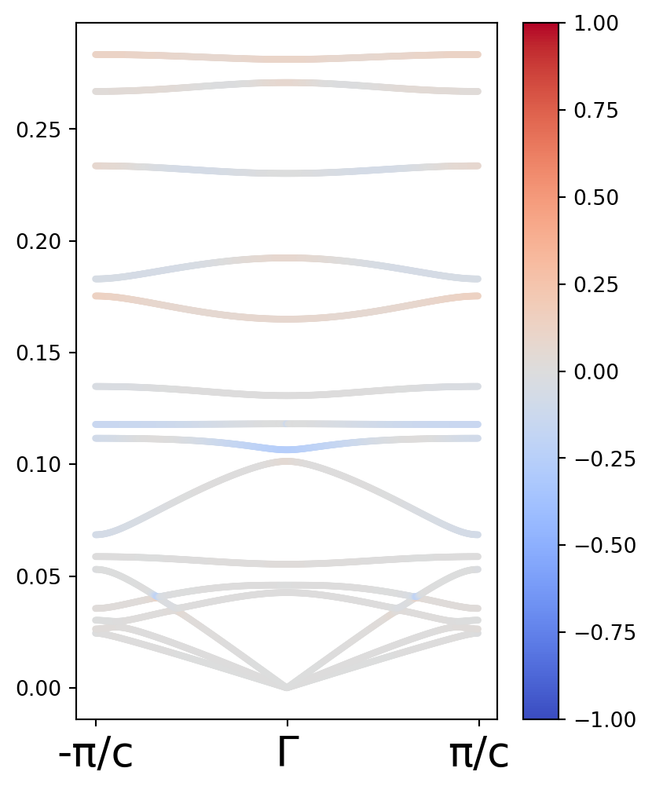

from pylab import *
import plotly.graph_objects as goCálculo de CCM para una cadena quiral C5
En este capítulo se estudiará la quiralidad de los modos normales de una cadena quiral con simetría \(C_{3}\). Los criterios usados son la polarización de fonón, el CCM y el pseudoescalar de momento angular.
Debajo, se definen varias constantes a emplear. Dentro de estas están las masas de los sitios, la longitud de los lados del ángulo vista desde arriba, las constantes de resorte y el ángulo de los enlaces respecto al plano x - y. Además, se definen las posiciones los tres átomos dentro de la celda unitaria, y dos átomos de celdas vecinas.
# Masas de los distintos sitios.
m1 = 1
m2 = 1
m3 = 1
m4 = 1
m5 = 1
M = [m1,m2,m3,m4,m5]
# Matriz de resortes a lo largo de x.
KL = 1
KT1 = 0.05
KT2 = 0.25
# Tensor de constante de red en configuración usual.
Kx = array([[KL,0,0],
[0,KT1,0],
[0,0,KT2]],dtype=complex)
# Longitud de los enlaces proyectados al plano
a = 1
# Ángulo de los enlaces respecto al plano x - y.
φxy = pi/3
# Longitud de la celda unitaria.
c = 4 * a * tan(φxy)
#Rotación de φ respecto al plano x - y.
def T(φ):
return array([[cos(φ) ,0. ,sin(φ)],
[0. ,1. ,0],
[-sin(φ),0. ,cos(φ)]])
#Rotación respecto al eje z.
def U(θ):
return array([[cos(θ),-sin(θ),0],
[sin(θ),cos(θ),0],
[ 0, 0,1]] )
# Posiciones de los átomos en la celda unitaria de la cadena.
r1 = array([1,0,0])
r2 = dot(U(2*pi/5),r1) + array([0,0,c/5])
r3 = dot(U(2*2*pi/5),r1)+ array([0,0,2*c/5])
r4 = dot(U(3*2*pi/5),r1)+ array([0,0,3*c/5])
r5 = dot(U(4*2*pi/5),r1)+ array([0,0,4*c/5])
# Posición de los átomos en la celda vecina.
r1plus = r1 + [0,0,c]
r5minus = r5 - [0,0,c]
positions = array([r1,r2,r3,r4,r5])
positionsnn = array([r5minus,r1plus])
X,Y,Z = positions.T
Xnn,Ynn,Znn = positionsnn.TDebajo, se muestra una imagen de la cadena.
DATA = [go.Scatter3d(x=X, y=Y, z=Z,mode='markers',marker_color = "blue",showlegend=False)]
DATA.append(go.Scatter3d(x=Xnn, y=Ynn, z=Znn,mode='markers',marker_color = "red",showlegend=False))
DATA.append(go.Scatter3d(x= [X[0],Xnn[0]], y=[Y[0],Ynn[0]], z=[Z[0],Znn[0]],mode='lines',line=dict(color='red'),showlegend=False))
DATA.append(go.Scatter3d(x= [X[0],X[1]], y=[Y[0],Y[1]], z=[Z[0],Z[1]],mode='lines',line=dict(color='blue'),showlegend=False))
DATA.append(go.Scatter3d(x= [X[2],X[1]], y=[Y[2],Y[1]], z=[Z[2],Z[1]],mode='lines',line=dict(color='blue'),showlegend=False))
DATA.append(go.Scatter3d(x= [X[2],X[3]], y=[Y[2],Y[3]], z=[Z[2],Z[3]],mode='lines',line=dict(color='blue'),showlegend=False))
DATA.append(go.Scatter3d(x= [X[4],X[3]], y=[Y[4],Y[3]], z=[Z[4],Z[3]],mode='lines',line=dict(color='blue'),showlegend=False))
DATA.append(go.Scatter3d(x= [X[4],Xnn[1]], y=[Y[4],Ynn[1]], z=[Z[4],Znn[1]],mode='lines',line=dict(color='red'),showlegend=False))fig = go.Figure(data=DATA)
fig.show()Cálculo de CCM de la estructura
#Matriz identidad.
Id = array([[1,0,0],
[0,1,0],
[0,0,1]] )
#Reflexión respecto al plano x - z.
σy = array([[-1,0,0],
[0,1,0],
[0,0,1]] )
def TensT(O,A):
"""Función que aplica transforma por un operador O a un tensor A."""
return dot( inv(O), dot(A,O) )Ya con todas las funciones a usar bien definidas, se hace el cálculo de la CCM De la estructura. Para ello, primero se calculan las coordenadas respecto al centro de masa.
# Centro de masa
RCM = (m1*r1 + m2*r2 + m3*r3 + m4*r4 + m5*r5)/(m1 + m2 + m3 + m4 + m5)
# Coordenada Relativa 1
qrcm1 = sqrt(m1)*(r1 - RCM)
# Coordenada Relativa 2
qrcm2 = sqrt(m2)*(r2 - RCM)
# Coordenada Relativa 3
qrcm3 = sqrt(m3)*(r3 - RCM)
# Coordenada Relativa 4
qrcm4 = sqrt(m4)*(r4 - RCM)
# Coordenada Relativa 5
qrcm5 = sqrt(m4)*(r5 - RCM)
# Lista con las coordenadas relativas.
Qrcm = [qrcm1,qrcm2,qrcm3,qrcm4,qrcm5]Queremos calcular la CCM tal que el plano de inversión elegido maximize la superposición de la estructura con la estructura invertida. Para ello, se define una función que calcula el CCM de la estructura tomando una reflexión respecto a un plano de entrada.
def CCMS(σ):
num = 0
den = 0
for q in Qrcm:
num = num + dot(q,dot(Id + σ,q))
den = den + dot(q,q)
return 1 - (num/(2*den))Ya hecho esto, se calcula el CCM de la estructura. Notamos que para esta cadena el CCM es igual sin importar que plano de reflexión se use. Esto se ve en la gráfica mostrada debajo.
θ = linspace(0,pi,300)
σ = []
for ang in θ:
σ.append(TensT(U(ang),σy))
σ = array(σ)
CCM_estructura = []
for ref in σ:
CCM_estructura.append(CCMS(ref))
print("La CCM de la estructura es", str(np.min(CCM_estructura)))La CCM de la estructura es 0.10330578512396704Labels = [r"0",r"π/2",r"π"]
Ticks = concatenate([[0],[pi/2],[pi]])
fig,ax = plt.subplots(ncols=1,nrows=1,figsize=(6,4.5))
ax.plot(θ,CCM_estructura)
ax.set_xticks(Ticks)
ax.set_ylim([0,1])
ax.set_xticklabels(Labels,fontsize = 20);
ax.set_ylabel("CCM",fontsize = 20)
plt.show()Cálculos del CCM de los modos vibracionales
Ahora calculamos el CCM asociado a los modos normales. Para ello, debemos también construir un programa que obtenga las frecuencias de dichos modos, así como una función que de el CCM de un modo dado.
Primero, se define una función que regresa el valor máximo del producto \(\langle Q| Q \rangle\) para cierto plano de reflexión. Además, se define una función que regresa el valor esperado y que será usada más adelante.
def expectedval(vec,S):
return dot(np.conj(vec).T,dot(S,vec)).real
θ = linspace(0,pi,300)
def CCMMax(q):
max = 0
for ang in θ:
σ = TensT(U(ang),σy)
if abs(expectedval(q,Id + σ)) > max:
max = abs(expectedval(q,Id + σ))
M = expectedval(q,Id + σ)
return MLuego, se define la función que calcula las frecuencias de un modo normal para un punto del espacio recíproco dado.
def rad(x):
return x*pi/180def EigenfrequenciesC5(k):
"""Función que regresa las eigenfrecuencias para un vector recíproco kz dado."""
#Se define el tensor de esfuerzos de todo el sistema.
#Matriz con constante de fuerza considerando una rotación respecto al plano x - y.
φxy = pi/3
Kx2 = dot(T(φxy),dot(Kx,T(-φxy)))
#Matrices de fuerza para cada uno de los vectores en la red.
K12 = dot(U(-1*rad(36)),dot(Kx2,U(rad(36))))
K13 = np.zeros((3, 3))
K14 = np.zeros((3, 3))
K15 = dot(U(-1*rad(144)),dot(Kx2,U(rad(144))))
K23 = dot(U(-1*rad(126)),dot(Kx2,U(rad(126))))
K24 = np.zeros((3, 3))
K25 = np.zeros((3, 3))
K34 = dot(U(pi),dot(Kx,U(-pi)))
K35 = np.zeros((3, 3))
K45 = dot(U(-1*rad(216)),dot(Kx,U(rad(216))))
DicMat = { 0: (K12 + K13 + K14 + K15)/m1,
1: -K12/sqrt(m1*m2),
2: -K13/sqrt(m1*m3),
3: -K14/sqrt(m1*m4),
4: -K15/sqrt(m1*m5)*exp(-1J*k*c),
5: -K12.conj().T/sqrt(m1*m2),
6: (K12 + K23 + K24 + K25)/m2,
7: -K23/sqrt(m2*m3),
8: -K24/sqrt(m2*m4),
9: -K25.conj().T/sqrt(m2*m5),
10: -K13.conj().T/sqrt(m3*m1),
11: -K23.conj().T/sqrt(m3*m2),
12: (K13 + K23 + K34 + K35)/m3,
13: -K34.conj().T/sqrt(m3*m4),
14: -K35.conj().T/sqrt(m3*m5),
15: -K14.conj().T/sqrt(m4*m1),
16: -K24.conj().T/sqrt(m4*m2),
17: -K34.conj().T/sqrt(m4*m3),
18: (K14 + K24 + K34 + K45)/m4,
19: -K45.conj().T/sqrt(m4*m5),
20: -K15.conj().T/sqrt(m5*m1)*exp(1J*k*c),
21: -K25.conj().T/sqrt(m5*m2),
22: -K35.conj().T/sqrt(m5*m3),
23: -K45.conj().T/sqrt(m5*m4),
24: (K15 + K25 + K35 + K45)/m5}
Dinteger = array(range(25)).reshape(5,5)
Dm = [ [DicMat[i] for i in rw] for rw in Dinteger ]
Dynamical = asarray(np.bmat(Dm))
ω2,eigvecs = eigh(Dynamical)
return sqrt(abs(ω2))/2/pi,eigvecsdef CCM_general(ω,eigvecs):
CCM = []
for i in range(len(ω2)):
eigvec = eigvecs[:,i]
q1 = sqrt(m1) * eigvec[0:3]
q2 = sqrt(m2) * eigvec[3:6]
q3 = sqrt(m3) * eigvec[6:9]
q4 = sqrt(m3) * eigvec[9:12]
q5 = sqrt(m3) * eigvec[12:]
Q = [q1,q2,q3,q4,q5]
num = 0
den = 0
for q in Q:
num += CCMMax(q)
den += vdot(q,q).real
CCM.append(1 - (num/(2*den)))
return CCM# Primero se define una función que regresa el operador de polarización de fonón.
def OperadorPseudomomento(n):
Sz = array([[0,-1J,0],
[1J,0,0],
[0,0,0]],dtype=complex)
return np.kron(np.eye(n,dtype=complex),Sz)
S = OperadorPseudomomento(5)
def Pol_general(ω,eigvecs):
Pol = []
for i in range(len(ω)):
eigvec = eigvecs[:,i]
Pol.append(expectedval(eigvec,S))
return Poldef Pz_general(ω,eigvecs):
pzlist = []
for i in range(len(ω)):
eigvec = eigvecs[:,i]
ω = sqrt(abs(ω2[i]))/2/pi
q1 = sqrt(m1) * eigvec[0:3]
q2 = sqrt(m2) * eigvec[3:6]
q3 = sqrt(m3) * eigvec[6:9]
q4 = sqrt(m3) * eigvec[9:12]
q5 = sqrt(m3) * eigvec[12:]
Q = [q1,q2,q3,q4,q5]
pz = 0
for i in range(len(Q)):
pz = pz + M[i]*Q[i][2]*(X[i]*Q[i][1] - Y[i]*Q[i][0]).real
pzlist.append(pz)
return pzlistKpoints = np.linspace(-pi/c,pi/c,500)
Klabels = [r"K/2",r"Γ",r"K/2"]
Kticks = concatenate([[0],[250],[500]])
BandasC5 = []
EigvecsC5 = []
CCMC5 = []
PolC5 = []
PzC5 = []
KevaluateC5 = (list( map(EigenfrequenciesC5,Kpoints) ))
for ω2,eigvec in KevaluateC5:
BandasC5.append(ω2)
EigvecsC5.append(eigvec)
for i in range(len(BandasC5)):
CCMC5.append(CCM_general(BandasC5[i],EigvecsC5[i]))
PolC5.append(Pol_general(BandasC5[i],EigvecsC5[i]))
PzC5.append(Pz_general(BandasC5[i],EigvecsC5[i]))
CCMC5 = array(CCMC5)
BandasC5 = array(BandasC5)
PolC5 = array(PolC5)
PzC5 = array(PzC5)numKC5,nbandsC5 = shape(BandasC5)
kenumC5 = arange(numKC5)
fig,ax = plt.subplots(ncols=1,nrows=1,figsize=(4.5,6))
for j in range(nbandsC5):
graficaC5 = ax.scatter(kenumC5,BandasC5.T[j],c = PolC5.T[j],cmap = "coolwarm",vmax = 1, vmin = -1,s = 5)
fig.colorbar(graficaC5)
ax.set_xticks(Kticks)
ax.set_xticklabels(Klabels,fontsize = 20);fig,ax = plt.subplots(ncols=1,nrows=1,figsize=(4.5,6))
for j in range(nbandsC5):
graficaC5 = ax.scatter(kenumC5,BandasC5.T[j],c = CCMC5.T[j],cmap = "Reds",vmax = 1, vmin = 0,s = 5)
fig.colorbar(graficaC5)
ax.set_xticks(Kticks)
ax.set_xticklabels(Klabels,fontsize = 20);fig,ax = plt.subplots(ncols=1,nrows=1,figsize=(4.5,6))
for j in range(nbandsC5):
graficaC5 = ax.scatter(kenumC5,BandasC5.T[j],c = PzC5.T[j],cmap = "coolwarm",vmax = 1, vmin = -1,s = 5)
fig.colorbar(graficaC5)
ax.set_xticks(Kticks)
ax.set_xticklabels(Klabels,fontsize = 20);/home/deigobau/anaconda3/envs/chiral/lib/python3.12/site-packages/matplotlib/cbook.py:1699: ComplexWarning:
Casting complex values to real discards the imaginary part
/home/deigobau/anaconda3/envs/chiral/lib/python3.12/site-packages/matplotlib/axes/_axes.py:4455: ComplexWarning:
Casting complex values to real discards the imaginary part
